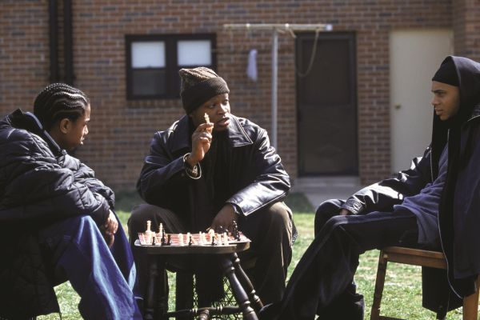
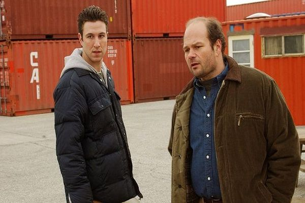
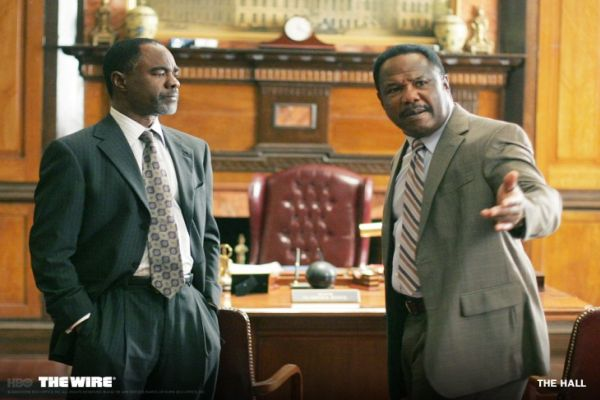
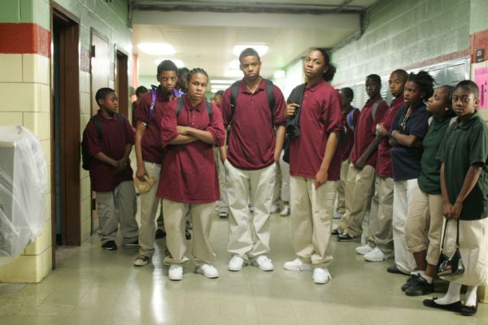

Themes
Institutional dysfunction
Simon has identified the organizations featured in the show:
- the Baltimore Police Department
- City Hall
- the Baltimore City Public School System
- the Barksdale Organization
- The Baltimore Sun
- the International Brotherhood of Stevedores
as comparable institutions. All are dysfunctional in some way, and the characters are typically betrayed by the institutions that they accept in their lives. There is also a sentiment echoed by a detective in Narcotics— superiors, especially in the higher tiers of the police department in the series, will attempt to use subordinates as scapegoats for any major scandals. Simon described the show as "cynical about institutions" while taking a humanistic approach toward its characters. A central theme developed throughout the show is the struggle between individual desires and subordination to the group's goals.
Surveillance
Central to the structure and plot of the show is the use of electronic surveillance and wiretap technologies by the police—hence the title The Wire. Salon.com described the title as a metaphor for the viewer's experience: the wiretaps provide the police with access to a secret world, just as the show does for the viewer. Simon has discussed the use of camera shots of surveillance equipment, or shots that appear to be taken from the equipment itself, to emphasize the volume of surveillance in modern life and the characters' need to sift through this information.
Season 1
this season is focused on drug war
Season 2
This season is focused on unions and decline of working class in US.
Season 3
This season is focused on politics and possibility of reform
season 4
This sesaon is focused on school system and.